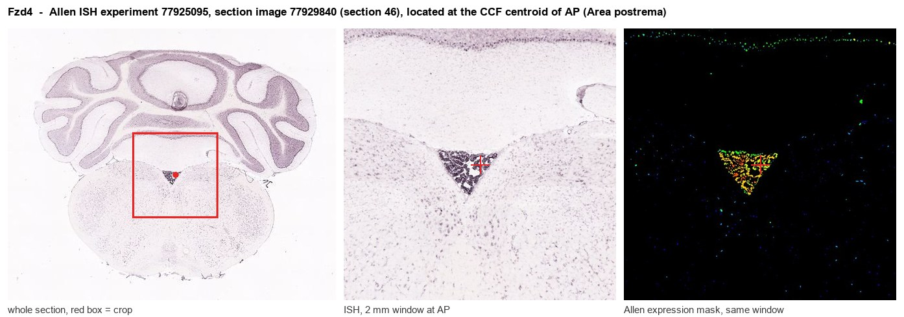
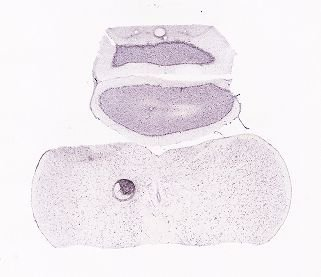
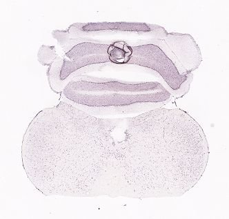
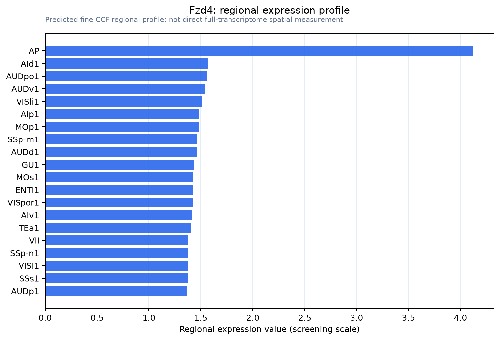

Fzd4
Frizzled-4 (Fz-4) (mFz4) (CD antigen CD344)
Spatial tier: STRICT_EXCLUSIVE · Class: GPCR · Top region: AP (Area postrema) · Positive regions: 3/554
42.6Discovery Score
40.6Targetability Score
CEvidence grade C
What this means: Fzd4: predicted fine-region profile is strict-exclusive, with 3 positive regions out of 554 (limit 12); direct spatial validation is required.
Function in AP: evidence, prediction, innovation
- Gene function
- Fzd4 encodes Frizzled-4, a seven-transmembrane Wnt/Norrin receptor that, with LRP5/6 and TSPAN12, activates canonical beta-catenin signalling. In the CNS its main role is in vascular endothelium, where Norrin (NDP) or WNT7A/B binding drives angiogenesis and blood-brain barrier differentiation (claudin-5 up, PLVAP/fenestrae down). FZD4 or NDP mutations cause familial exudative vitreoretinopathy.
- Region function
- The area postrema is a hindbrain circumventricular organ with fenestrated, leaky vessels that samples blood-borne toxins, GDF15 and GLP-1, and drives nausea, emesis and conditioned flavour avoidance.
- Published in this region
- inferred Wang et al. 2019 (eLife) showed area postrema endothelium has very low beta-catenin signalling and that the AP secretes the Wnt antagonist WIF1; Wif1 loss roughly doubled the fraction of AP vessels expressing BBB markers, and forced beta-catenin activity converted leaky AP vessels to a barrier phenotype. Benz et al. 2019 found the same Wnt-low signature across circumventricular organs, and Wang et al. 2012 showed acute Fz4 loss breaks barrier integrity in mature CNS vessels. No study has manipulated Fzd4 in the AP itself.
- Predicted function
- Prediction: Fzd4 in AP endothelium is likely held signalling-off by local WIF1, keeping vessels fenestrated so blood-borne emetic signals reach AP neurons. Endothelial Fzd4 gain-of-function (Norrin, or the FZD4-selective WNT surrogate L6-F4-2) should tighten AP vessels and blunt responses to GDF15, LiCl or GLP-1 analogues, whereas Fzd4 deletion should do little because the pathway is already off.
- Innovation
- ★★★★★ 5/5 Fzd4 has never been studied functionally in the area postrema despite the AP being the key emesis and GDF15/GLP-1 sensing organ and despite excellent Wnt/Fzd4 genetic and biologic tools.
- Tools
- Fzd4 floxed and germline knockout mice, Ndp (Norrin) knockout, Tspan12 and Lrp5 mutants, BAT-gal and LEF1 Wnt reporters, the FZD4-selective WNT surrogate L6-F4-2, anti-FZD4 antibodies; AP access via Gfral-Cre, Glp1r-Cre, Cdh5-CreERT2.
- References
Direct evidence located at the region

Allen ISH experiment 77925095, section image 77929840 (section 46): the section that contains the CCF centroid of Area postrema according to the Allen image-to-atlas alignment (reference_to_image), with a 2 mm window around that point. Left: whole section, red box = window. Middle: ISH signal. Right: Allen's expression-mask view of the same window. open this image in the Allen viewer
Look it up yourself: Allen Mouse Brain ISH for Fzd4Allen reference atlas: AP (structure 207)ABC Atlas MERFISH viewer(in the ABC Atlas choose dataset MERFISH-C57BL6J-638850-CCF, colour cells by gene "Fzd4" or by parcellation_substructure "AP")All genes confined to AP + 3-D brain
Direct spatial evidence
MERFISH REGION LOCATOR

DIRECT ALLEN ISH

DIRECT ALLEN ISH

Regional expression figure

Predicted WMB × fine-CCF profile; not direct full-transcriptome spatial measurement.
Spatial profile
Evidence and specificity
- Evidence status
- PREDICTED_FINE
- Direct sources
- None; predicted localization only
- Exclusive threshold
- 12 positive regions out of 554
- Spatial specificity
- 0.285
- Top-region fraction
- 0.091
- Filter status
- PASS
Interpretation limits
- Cell-type-to-region projection is imputed expression, not direct spatial measurement.
- Adult reference atlases do not establish stability across age, sex, strain, state, or disease.
- Transcript abundance does not guarantee protein abundance or genetic-tool performance.